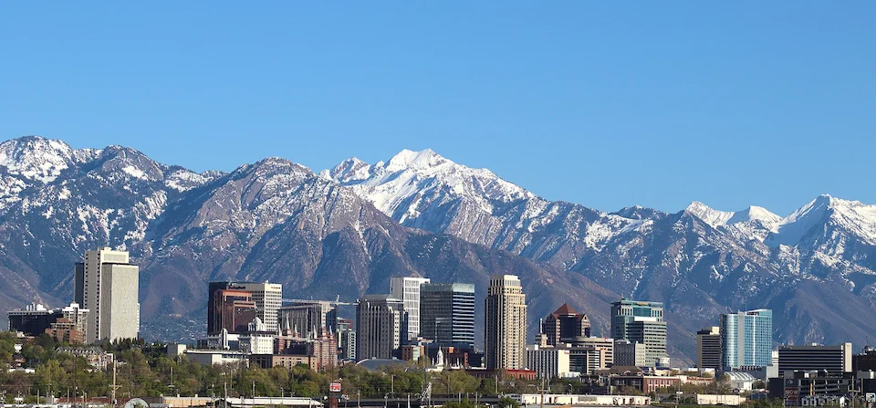

I love Salt-Lake City, Utah because of the beautiful mountain ranges. The city was built by people from the Church of Jesus Christ of Latter-Day Saints. One of the most famous buildings in Salt-Lake City is the Salt-Lake temple, which took around forty years to build. It is now under construction to bring it up to code, and to restore it.
